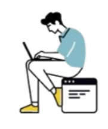

Hati-hati! Pinjaman online ilegal bisa bikin datamu bocor dan dikejar debt collector dengan cara kasar, plus bunga yang nggak masuk akal!
"Waduh! Dataku disalahgunakan dan aku diteror debt collector. Harus gimana nih?!"

Pilih layanan pinjaman yang resmi dan terdaftar di OJK ya! Biar datamu aman dan nggak kena masalah keuangan.